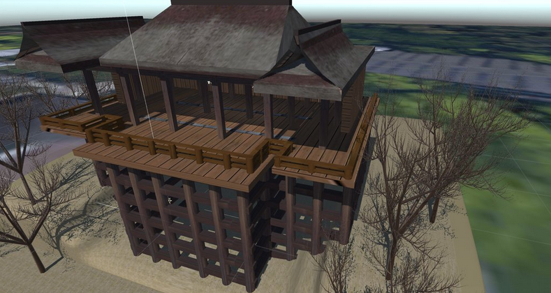
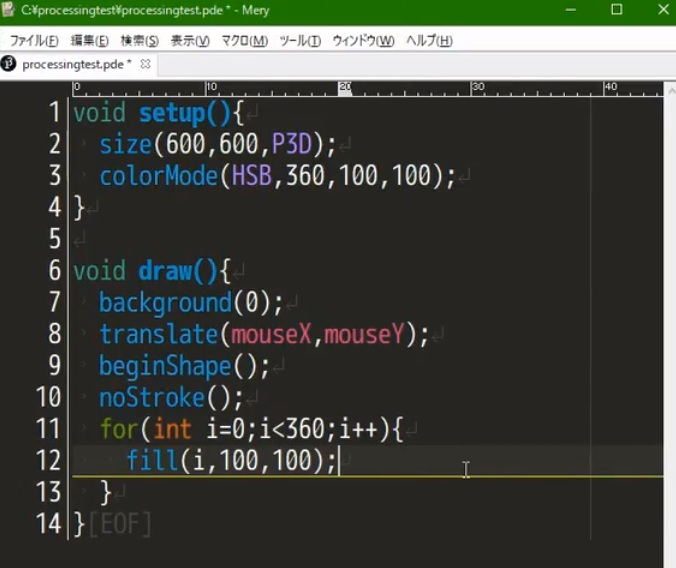

4次元テトリス
テトリスのゲームフィールドを4次元空間にしてみた高難易度パズルゲームです.
デモンストレーション用に自動プレイするAIも作成ししてみました.
使用言語: C++
使用ライブラリ: DxLib
製作期間: 19日
製作時期: 2016年4月
ダウンロード
プレイ動画(AI)
MMD×AR
所属サークルのクリスマス会に向けて制作した,クリスマスの夜をディスプレイの中の女の子たちと一緒に過ごすための作品です.自作のARマーカ検出器を用いて,空中に浮かんで見えるディスプレイを作成しました.
マスコットアプリ文化祭2015でリズちゃん賞及び,DMM.comラボ賞を受賞しました.
使用言語: C/C++
使用ライブラリ: OpenCV(マーカ検出,カメラなど),DxLib(MMD出力,制御など)
制作期間: 約2週間
製作時期: 2015年12月
配布なし
ARを用いた空中ディスプレイ
スマートフォンからディスプレイが立体に浮き上がるとカッコいいと思って,ただそれだけで作った作品です.上のMMD×ARと同じ自作のマーカ検出を利用しています.
マスコットアプリ文化祭2015で京町セイカ賞を受賞しました.
使用言語: C/C++
使用ライブラリ: OpenCV, DxLib
制作期間: MMD×ARの制作後に追加で2日
製作時期: 2016年1月
配布なし
透明マント
所属サークルの学園祭に向けて作成した作品です.学園祭では,大きなタオルを使用して自分自身や来場者さんの姿を消したことで盛り上がりました.指定した色と近い色の部分を事前に撮影した背景に変化させています.
使用言語: C
使用ライブラリ: OpenCV
製作期間: 約3週間
製作時期: 2015年10月
配布なし
清水DIVE
サークルメンバーとVRハッカソンで制作した作品です.
VRで「人工恐怖」の表現を目指しました.ハコスコなどのスマホ用HMDを使用することで,お手軽に「落下の恐怖」を体験できるスマホアプリです.自分は主に清水寺のモデリングを担当し,他のメンバーにUnityでのシステム作成や,送風機のハード制御を行ってもらいました.
株式会社コロプラ様が主催した「VRHack祭 in Kyoto」で優勝しました.
使用ソフト: Unity, Blenderなど
製作期間: 約2週間
製作時期: 2016年3月
チームメイトの記事

4次元超立方体,5次元超立方体の可視化
東洋大学のとある研究の記事を読んで,任意の自演の超立方体を可視化してみようと思い,作成しました.
使用言語: Processing
製作期間: 約1週間
Mascot Shooter AR
好きなキャラクターを現実世界に呼び出して戦えたら面白いだろうなーっという思いで,昨年作ったARマーカ検出器を改良して,それを用いて遊ぶゲームを作りました.
マスコットアプリ文化祭2016で「最先端 or 昭和の技術賞(最先端)」「ハッカドール賞 - MMD利用部門」「君と私とせんばこき賞」の3賞を受賞しました.
使用言語: C++
使用ライブラリ: OpenCV, DxLib
製作期間: 約3週間
制作時期: 2016年12月
ダウンロード
ProcessingMery
フリーのテキストエディタ「Mery」でProcessingのコーディング及び実行をするための拡張機能です.
シンタックスハイライト,インテリセンス,ビルド及び実行機能を利用できます
製作時期: 2017年5月
ダウンロード
